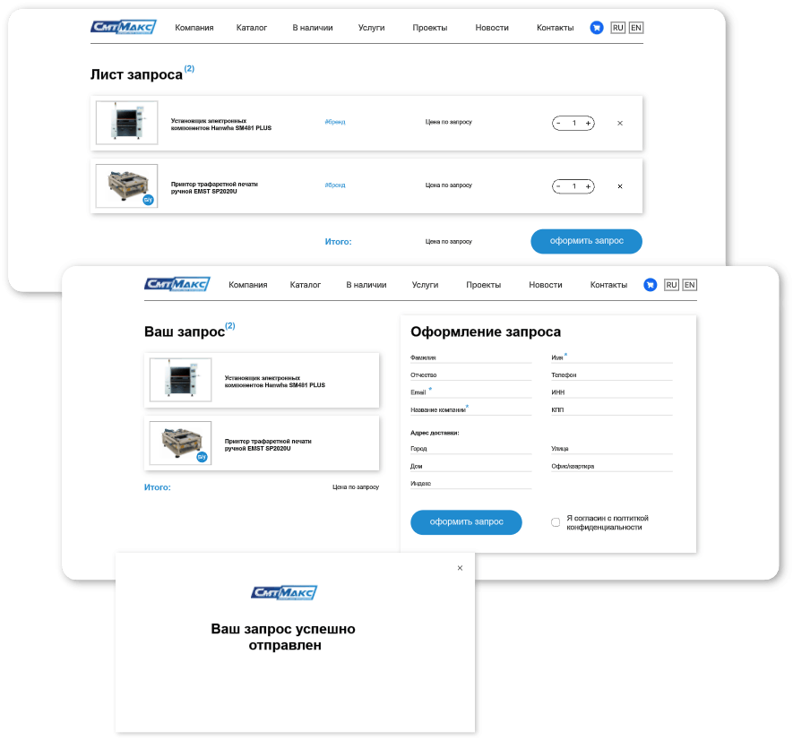
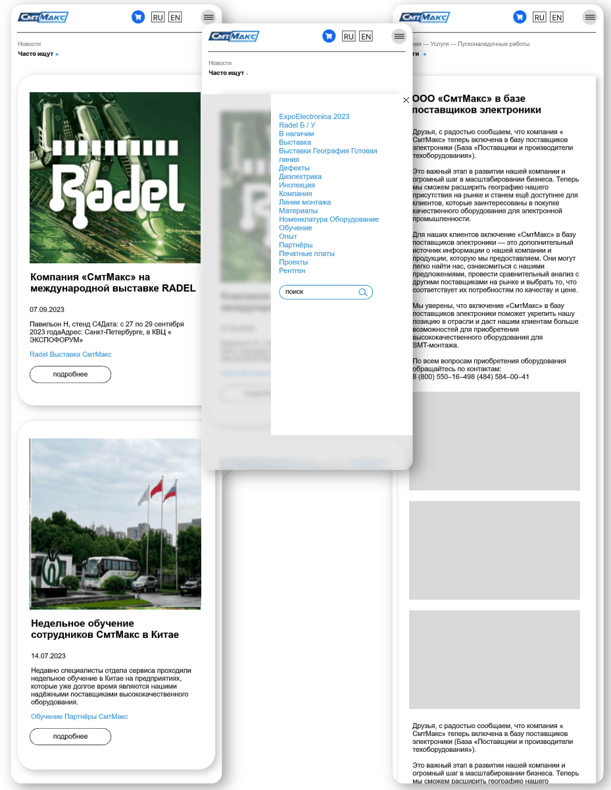

<!DOCTYPE html><html lang="ru"><head><meta charset="UTF-8"><meta http-equiv="X-UA-Compatible" content="IE=edge"><meta name="viewport" content="width=device-width,initial-scale=1"><meta name="description" content="Краткое описание документа"><meta name="keywords" content="keywords-ключевые слова для поиска"><link rel="icon" type="image/icon" href="../img/icons/icon-log.png"><link rel="stylesheet" type="text/css" href="../css/main.min.css"><link rel="stylesheet" type="text/css" href="../css/portfolio-project.min.css"><script defer="defer" type="text/javascript" src="../js/app/runtime.min.js"></script><script defer="defer" type="text/javascript" src="../js/app/anime-vendors.min.js"></script><script defer="defer" type="text/javascript" src="../js/main.min.js"></script><title>Sadovskiy-design</title></head></html><body><div class="preloader"><div style="--i: 1"></div><div style="--i: 2"></div><div style="--i: 3"></div><div style="--i: 4"></div></div><div class="wrapper"><div class="page" id="page"><div class="sidebar-menu"><div class="sidebar-menu__column"><div class="sidebar-menu__menu bp-1"><div class="sidebar-menu__order"><div class="sidebar-menu__project-button">Начать проект<a class="sidebar-menu__button anchor-link" href="#order"><i class="icon-arrow-right _icon"></i></a></div></div><div class="sidebar-menu__row"><div class="networks"><a class="networks__icon" href=""><i class="icon-whatsapp _icon"></i><span>Whatsapp</span></a><a class="networks__icon" href=""><i class="icon-telegram-fly _icon"></i><span>Telegram</span></a></div><div class="contacts"><div class="contacts__phone"><span>Телефон:</span><a href="tel:89105487772">8 (910) 548 77-72;</a><a href="tel:89533321089">8 (953) 332 10-89</a></div><div class="contacts__mail"><span>Почта:</span><a href="mailto:info@sadovskiy.art">info@sadovskiy.art</a></div></div></div></div></div></div><header class="page__header-main"><div class="header mlrp-b0101"><div class="header__body"><div class="header__column"><div class="header__logo"><div class="header__image"></div><div class="header__title bp-2"><a href="../index.html">Sadovskiy Design</a></div></div></div><div class="header__column"><div class="header__menu"><div class="menu-list" data-move-el="[{'bp-max': 768.98, 'index': 0, 'target': '.bp-1'}]"><a class="menu-list__link" href="../index.html#about"><span data-text="Компания">Компания</span></a><a class="menu-list__link" href="../project.html"><span data-text="Проекты">Проекты</span></a><a class="menu-list__link" href="../index.html#service"><span data-text="Услуги">Услуги</span></a><a class="menu-list__link anchor-link" href="#contacts"> <span data-text="Контакты">Контакты</span></a></div><div class="header__contacts"><div class="header__phone"><a href="tel:89533321089"><span>+7 (953) 332 10-89</span></a></div><div class="burger-button header__button"><div class="burger-button__wrapper"><div class="burger-button__items"><span></span><span></span><span></span></div></div></div></div></div></div></div></div></header><main class="page__content _container" id="content"><section class="page__portfolio-performance"><div class="portfolio-performance"><div class="portfolio-performance__wrapper"><div class="portfolio-performance__body mlrp-b0101"><div class="portfolio-performance__content"><div class="portfolio-performance__column bp-3"><div class="portfolio-performance__title t-h3"><h1 class="t-h1">Редизайн сайта для&nbsp; компании СмтМакс</h1></div><div class="portfolio-performance__text"><h3 class="t-h4">Компания СМТМакс является одним из&nbsp;ведущихпоставщиков SMT-оборудования в&nbsp;России и&nbsp;работает более 10&nbsp;лет.</h3></div><a class="portfolio-performance__button button anchor-link" href="#order"><span>Оставить заявку</span><div class="portfolio-performance__icon icon"><i class="icon-arrow-right _icon"></i></div></a></div><div class="portfolio-performance__column"><div class="portfolio-performance__image" data-move-el="[{'bp-max': 768.98, 'index': 1, 'target': '.bp-3'}]"><picture><source srcset="../img/portfolio/project-smt/perf.webp" type="image/webp"></picture></div></div></div></div></div></div></section><section class="page__portfolio-about"><div class="portfolio-about"><div class="portfolio-about__background"><picture><source srcset="../img/portfolio/project-smt/phonoteka.webp" type="image/webp"></picture></div><div class="portfolio-about__body"><div class="portfolio-about__content"><div class="portfolio-about__row"><div class="portfolio-about__column"><h2 class="portfolio-about__title t-h2">О проекте</h2></div><div class="portfolio-about__column"><p class="portfolio-about__text t-h4">Корпоративный многостраничный сайт для&nbsp;компании СмтМакс с&nbsp;каталогом поставляемой продукции</p></div></div><div class="portfolio-about__row"><div class="portfolio-about__column"><h2 class="portfolio-about__title t-h2">Поставленная задача</h2></div><div class="portfolio-about__column"><p class="portfolio-about__text t-h4">Обновить дизайн сайта, сделать его&nbsp;современным и&nbsp;привлекательным, а&nbsp;также&nbsp;удобным в&nbsp;использовании. Особое внимание уделить текстам на&nbsp;сайте&nbsp;— они&nbsp;должны быть информативными и&nbsp;легко читаемыми. Также&nbsp;необходимо разработать удобный поиск по&nbsp;товарам и&nbsp;услугам, чтобы&nbsp;клиенты могли быстро находить нужную информацию</p></div></div><div class="portfolio-about__row"><div class="portfolio-about__column"><h2 class="portfolio-about__title t-h2">Проделанная работа</h2></div><div class="portfolio-about__column"><p class="portfolio-about__text t-h4">Разработка логичной структуры сайта → дизайн концепция → написание SEO-текстов, в&nbsp;тексте прописали SEO-ключи → отрисовка дизайн-макета → вёрстка сайта → адаптация сайта под&nbsp;все&nbsp;виды устройств → сделали шаблон под&nbsp;новости компании→ создание шаблонов под&nbsp;карточки товаров→ сделали поиск по&nbsp;словам и&nbsp;по&nbsp;категориям товар→ внедрение CMS для&nbsp;удобства клиента→ подключение функционала, форм обратной связи, телефонов и&nbsp;мессенджеров → прописаны основные SEO-теги</p></div></div></div></div></div></section><section class="page__portfolio-section mlrp-b0101"><div class="portfolio-section"><div class="portfolio-section__body"><div class="portfolio-section__line"><div class="portfolio-section__title t-h2">Структура сайта</div><div class="portfolio-section__text t-h4">Любая разработка сайта, всегда начинается с&nbsp;продумывании грамотной структуры. Очень важно всю&nbsp;информацию подавать в&nbsp;правильном порядке и&nbsp;порционно. Новигация тоже&nbsp;должна быть логичной и&nbsp;понятной каждому пользователю.</div></div><div class="portfolio-section__line-1-row-col"><div class="portfolio-section__image"><picture><source srcset="../img/portfolio/project-smt/structure.webp" type="image/webp"></picture></div></div></div></div></section><section class="page__portfolio-section"><div class="portfolio-section _bg-color"><div class="portfolio-section__body"><div class="portfolio-section__content mlrp-b0101"><div class="portfolio-section__line _text-white"><div class="portfolio-section__title t-h2">Дизайн концепция</div><div class="portfolio-section__text t-h4">Фирменный цвет является важным стилеобразующим компонентом. Основными фирменными цветами СМТ-МАКС согласно брендбуку являются синий и&nbsp;голубой.</div></div></div><div class="portfolio-section__image"><picture><source srcset="../img/portfolio/project-smt/mockups.webp" type="image/webp"></picture></div></div></div></section><section class="page__portfolio-section mlrp-b0101"><div class="portfolio-section"><div class="portfolio-section__body"><div class="portfolio-section__line"><div class="portfolio-section__title t-h2">Дизайн&nbsp;главной страницы</div><div class="portfolio-section__text t-h4">Дизайн&nbsp;— это&nbsp;не&nbsp;просто красиво. Каждый элемент несёт огромный смысл. При&nbsp;помощи дизайна можно управлять взглядом клиента и&nbsp;привести его&nbsp;к&nbsp;целевому действию.</div></div><div class="portfolio-section__content"><div class="portfolio-section__line-main-col"><div class="portfolio-section__image"><picture><source srcset="../img/portfolio/project-smt/desktop.webp" type="image/webp"></picture></div></div><!--._line-main-col                ._image.-resize                	img(src="../img/portfolio/project-smt/main-frame-001.png"                		alt="image")                --><div class="portfolio-section__line-main-col portfolio-section__line-main-col--resize"><div class="portfolio-section__image"><picture><source srcset="../img/portfolio/project-smt/main-frame-1.webp" type="image/webp"></picture><div class="tooltip portfolio-section__tooltip"><div class="tooltip__button"><i class="icon-plus tooltip-button"></i><i class="icon-minus tooltip-button"></i></div><div class="tooltip__content"><p>Когда пользователь заходит на&nbsp;сайт, он&nbsp;за&nbsp; 3&nbsp;–&nbsp;5 секунд должен понять, куда он&nbsp;попал и&nbsp;что&nbsp;ему здесь&nbsp;предлагают. В&nbsp;данном случае хороший читаемый оффер объясняет, что&nbsp;на&nbsp;сайте можно приобрести оборудование&nbsp;смт. Так&nbsp;же&nbsp;на&nbsp;первом экране расположены две&nbsp; целевые кнопки&nbsp;— кнопка перехода в&nbsp;каталог и&nbsp; кнопка «оставить заявку».</p></div></div></div><div class="portfolio-section__image"><picture><source srcset="../img/portfolio/project-smt/main-frame-2.webp" type="image/webp"></picture><div class="tooltip portfolio-section__tooltip"><div class="tooltip__button"><i class="icon-plus tooltip-button"></i><i class="icon-minus tooltip-button"></i></div><div class="tooltip__content"><p>Далее идут блоки, которые знакомят пользователя &nbsp; компанией и&nbsp;вызывают лояльность будущего покупателя.</p></div></div></div><div class="portfolio-section__image"><picture><source srcset="../img/portfolio/project-smt/main-frame-3.webp" type="image/webp"></picture><div class="tooltip portfolio-section__tooltip"><div class="tooltip__button"><i class="icon-plus tooltip-button"></i><i class="icon-minus tooltip-button"></i></div><div class="tooltip__content"><p>Главные смыслы этого&nbsp;блока, мы&nbsp;сделали более крупным шрифтом. Люди никогда не&nbsp;будут читать на&nbsp;сайте сплошной текст. А&nbsp;вот&nbsp;если&nbsp;его&nbsp;разбить на&nbsp;смыслы и&nbsp;выделить главные моменты, то&nbsp;он&nbsp;не&nbsp;останется незамеченным.</p></div></div></div><div class="portfolio-section__image"><picture><source srcset="../img/portfolio/project-smt/main-frame-4.webp" type="image/webp"></picture><div class="tooltip portfolio-section__tooltip"><div class="tooltip__button"><i class="icon-plus tooltip-button"></i><i class="icon-minus tooltip-button"></i></div><div class="tooltip__content"><p>Блок с&nbsp;услугами. При&nbsp;клике можно почитать про&nbsp;услугу подробнее</p></div></div></div><div class="portfolio-section__image"><picture><source srcset="../img/portfolio/project-smt/main-frame-5.webp" type="image/webp"></picture><div class="tooltip portfolio-section__tooltip"><div class="tooltip__button"><i class="icon-plus tooltip-button"></i><i class="icon-minus tooltip-button"></i></div><div class="tooltip__content"><p>Этот&nbsp;блок на&nbsp;предыдущем сайте нам&nbsp;очень понравился, мы&nbsp;лишь его&nbsp;немного изменили и&nbsp;встроили в&nbsp;новый дизайн</p></div></div></div><div class="portfolio-section__image"><picture><source srcset="../img/portfolio/project-smt/main-frame-6.webp" type="image/webp"></picture><div class="tooltip portfolio-section__tooltip"><div class="tooltip__button"><i class="icon-plus tooltip-button"></i><i class="icon-minus tooltip-button"></i></div><div class="tooltip__content"><p>Блок с&nbsp;проектами с&nbsp;возможностью перейти на&nbsp;страницу… как&nbsp;то&nbsp;подумать и&nbsp;описать по&nbsp;другому</p></div></div></div><div class="portfolio-section__image"><picture><source srcset="../img/portfolio/project-smt/main-frame-7.webp" type="image/webp"></picture><div class="tooltip portfolio-section__tooltip"><div class="tooltip__button"><i class="icon-plus tooltip-button"></i><i class="icon-minus tooltip-button"></i></div><div class="tooltip__content"><p>Далее идут блоки с&nbsp;логотипами, отзывами, благодарственными письмами и&nbsp;сертификатами. Эти&nbsp; блоки тоже&nbsp;очень важны на&nbsp;сайте, их&nbsp;функция вызывать доверия пользователя.</p></div></div></div><div class="portfolio-section__image"><picture><source srcset="../img/portfolio/project-smt/main-frame-8.webp" type="image/webp"></picture></div><div class="portfolio-section__image"><picture><source srcset="../img/portfolio/project-smt/main-frame-9.webp" type="image/webp"></picture></div><div class="portfolio-section__image"><picture><source srcset="../img/portfolio/project-smt/main-frame-10.webp" type="image/webp"></picture><div class="tooltip portfolio-section__tooltip"><div class="tooltip__button"><i class="icon-plus tooltip-button"></i><i class="icon-minus tooltip-button"></i></div><div class="tooltip__content"><p>Форма обратной связи. Её&nbsp;фон&nbsp;специально имеет насыщенный фирменный цвет и&nbsp;сильно выбивается из&nbsp;дизайна сайта. Это&nbsp;нужно для&nbsp;привлечения внимания.</p></div></div></div><div class="portfolio-section__image"><picture><source srcset="../img/portfolio/project-smt/main-frame-11.webp" type="image/webp"></picture><div class="tooltip portfolio-section__tooltip"><div class="tooltip__button"><i class="icon-plus tooltip-button"></i><i class="icon-minus tooltip-button"></i></div><div class="tooltip__content"><p>Аккуратный и&nbsp;стильный подвал всегда вызывает восторг у&nbsp;пользователя. Он&nbsp;всегда дублирует меню и&nbsp;немного больше даёт информации о&nbsp;компании и&nbsp;навигации по&nbsp;сайту</p></div></div></div></div></div></div></div><div class="portfolio-section-background"><picture><source srcset="../img/portfolio/project-smt/phonoteka.webp" type="image/webp"></picture></div></section><section class="page__portfolio-section mlrp-b0101"><div class="portfolio-section"><div class="portfolio-section__body"><div class="portfolio-section__line"><div class="portfolio-section__title t-h2">Каталог</div><div class="portfolio-section__text t-h4">В&nbsp;рамках проекта по&nbsp;редизайну сайта мы&nbsp;провели комплексное обновление ключевых страниц. Основной целью редизайна было улучшение пользовательского опыта, повышение удобства навигации и&nbsp;визуальной привлекательности. На&nbsp;странице «Каталог» мы&nbsp;переработали структуру и&nbsp;дизайн, чтобы&nbsp;сделать поиск товаров более интуитивно понятным.</div></div><div class="portfolio-section__line-2-row-col"><div class="portfolio-section__image"><picture><source srcset="../img/portfolio/project-smt/ctl-01.webp" type="image/webp"></picture></div><div class="portfolio-section__info"><ul><li class="t-h3"><span>Упрощённый интерфейс</span></li><li>Мы&nbsp;убрали лишние элементы, сосредоточив внимание на&nbsp;товарах. Теперь пользователи могут быстрее находить нужные категории.</li></ul></div></div><div class="portfolio-section__line-2-row-col"><div class="portfolio-section__image"><picture><source srcset="../img/portfolio/project-smt/ctl-02.webp" type="image/webp"></picture></div><div class="portfolio-section__info"><ul><li class="t-h3"><span>Фильтры</span></li><li>Добавлены удобные фильтры по&nbsp;характеристикам.</li></ul></div></div><div class="portfolio-section__line-2-row-col"><div class="portfolio-section__image"><picture><source srcset="../img/portfolio/project-smt/ctl-03.webp" type="image/webp"></picture></div><div class="portfolio-section__info"><ul><li class="t-h3"><span>Сравнение</span></li><li>Добавлена возможность сравнения товаров по&nbsp;основным характеристикам.</li></ul></div></div></div></div></section><section class="page__portfolio-section"><div class="portfolio-section"><div class="portfolio-section__bg-image"><picture><source srcset="../img/main/card-item-bg.webp" type="image/webp"></picture></div><div class="portfolio-section__body mlrp-b0101"><div class="portfolio-section__line"><div class="portfolio-section__title t-h2">Карточка товара</div><div class="portfolio-section__text t-h4">Редизайн карточки товара был&nbsp;направлен на&nbsp;предоставление максимальной информации в&nbsp;удобном формате.</div></div><div class="portfolio-section__line-1-row-col"><div class="portfolio-section__image"><picture><source srcset="../img/portfolio/project-smt/product-card.webp" type="image/webp"></picture></div></div></div></div></section><section class="page__portfolio-section"><div class="separator"><div class="separator__image"><picture><source srcset="../img/portfolio/project-smt/frame-c.webp" type="image/webp"></picture></div></div></section><section class="page__portfolio-section mlrp-b0101"><div class="portfolio-section"><div class="portfolio-section__body"><div class="portfolio-section__line"><div class="portfolio-section__title t-h2">Оформление заказа</div><div class="portfolio-section__text t-h4">Новый дизайн блока предлагает интуитивно понятный интерфейс, который позволяет пользователям быстро и&nbsp;легко завершить покупку. Мы&nbsp;убрали лишние шаги и&nbsp;сделали акцент на&nbsp;важной информации, чтобы&nbsp;каждый этап был&nbsp;понятен. Теперь оформление заказа занимает всего несколько кликов.</div></div><div class="portfolio-section__line-2-col"><div class="portfolio-section__image"><picture><source srcset="../img/portfolio/project-smt/order-1.webp" type="image/webp"></picture></div><div class="portfolio-section__image"><picture><source srcset="../img/portfolio/project-smt/order-2.webp" type="image/webp"></picture></div></div></div></div></section><section class="page__portfolio-section mlrp-b0101"><div class="portfolio-section _offset-top"><div class="portfolio-section__body"><div class="portfolio-section__line"><div class="portfolio-section__title t-h2">Услуги</div><div class="portfolio-section__text t-h4">Новый дизайн блока «Услуги» предлагает интуитивно понятный интерфейс, который позволяет пользователям быстро и&nbsp;легко завершить покупку. Мы&nbsp;убрали лишние шаги и&nbsp;сделали акцент на&nbsp;важной информации, чтобы&nbsp;каждый этап был&nbsp;понятен. Теперь оформление заказа занимает всего несколько кликов.</div></div><div class="portfolio-section__line-2-col"><div class="portfolio-section__image"><picture><source srcset="../img/portfolio/project-smt/services-1.webp" type="image/webp"></picture></div><div class="portfolio-section__image"><picture><source srcset="../img/portfolio/project-smt/services-2.webp" type="image/webp"></picture></div></div></div></div></section><section class="page__portfolio-section mlrp-b0101"><div class="portfolio-section _offset-top"><div class="portfolio-section__body"><div class="portfolio-section__line"><div class="portfolio-section__title t-h2">Новости</div><div class="portfolio-section__text t-h4">Новый блок «Новости» получил свежий и&nbsp;современный дизайн, который привлекает внимание пользователей. Мы&nbsp;обновили цветовую гамму и&nbsp;шрифты, чтобы&nbsp;создать более приятную атмосферу для&nbsp;чтения. Теперь каждая новость выглядит стильно и&nbsp;информативно&nbsp;</div></div><div class="portfolio-section__line-2-col"><div class="portfolio-section__image"><picture><source srcset="../img/portfolio/project-smt/news-1.webp" type="image/webp"></picture></div><div class="portfolio-section__image"><picture><source srcset="../img/portfolio/project-smt/news-2.webp" type="image/webp"></picture></div></div></div></div></section><section class="page__page-unknown"><div class="unknown-page"><div class="unknown-page__body"><div class="unknown-page__column"><div class="unknown-page__image"><picture><source srcset="../img/portfolio/project-smt/frame-l.webp" type="image/webp"></picture></div></div><div class="unknown-page__column"><div class="unknown-page__image"><picture><source srcset="../img/portfolio/project-smt/frame-r.webp" type="image/webp"></picture></div></div></div></div></section><section class="page__order-portfolio mlrp-b0101" id="order"><div class="order-place"><div class="order-place__content order-place__content--order-page"><div class="order-place__body maxw-b0102"><div class="order-place__header order-place__header--tcl-order-page"><h2 class="order-place__title t-h1">Закажите&nbsp;услуги студии Sadovskiy&nbsp;Design</h2><p class="order-place__text p-text">Оставьте&nbsp;свой&nbsp;номер&nbsp;телефона&nbsp;и&nbsp;мы&nbsp;свяжемся с&nbsp;вами в&nbsp;рабочее время. Наша&nbsp;команда&nbsp;проконсультирует&nbsp;и&nbsp;ответит на&nbsp;любые&nbsp;вопросы</p></div><div class="order-place__footer order-place__footer--tcl-order-page"></div><form class="order-form order-place__form" id="order" action=""><div class="order-form__column _brd-order"><div class="order-form__line"><label class="order-form__lebel" for="name"></label><div class="order-form__input"><input class="input" id="name" placeholder="Имя*" autocomplete="off" type="text" name="name" error="Обязательное поле"></div></div></div><div class="order-form__column _brd-order"><div class="order-form__line"><label class="order-form__lebel" for="phone"></label><div class="order-form__input"><input class="input phone" type="tel" id="phone" placeholder="+7 (___) ___-__-__" autocomplete="off" name="phone" error="Обязательное поле"></div></div></div><div class="order-form__column _brd-order"><button class="order-form__button button" form="order" type="submit"><span>Оставить заявку</span><div class="order-form__icon icon"><i class="icon-arrow-right _icon"></i></div></button></div></form><div class="order-place__footer order-place__footer--tcl-order-page"><p class="order-place__text p-text">Либо напишите нам на&nbsp;почту info@sadovskiy.art или просто позвоните по&nbsp;номеру</p><div class="order-place__phone">+7 (953) 332 10-89</div></div></div></div></div></section></main><footer class="page__footer"><footer class="footer" id="contacts"><div class="footer__body mlrp-b0101"><div class="footer__row"><div class="footer__header"><div class="footer__logo"><picture><source srcset="../img/icons/logo-w.webp" type="image/webp"></picture><a href="../index.html">Sadovskiy Design</a></div><div class="footer__icons"><a class="footer__link" href="" target="_blank"><i class="icon-telegram-fly _icon"></i></a><a class="footer__link" href="" target="_blank"><i class="icon-whatsapp _icon"></i></a><a class="footer__link" href="https://dzen.ru/sadovskiydesign" target="_blank"><i class="icon-dzen _icon"></i></a><a class="footer__link" href="https://vk.com/wall-166763916_80" target="_blank"><i class="icon-vk-brand _icon"></i></a><a class="footer__link" href="https://www.youtube.com/@sadovskiydesign" target="_blank"><i class="icon-youtube-lg _icon"></i></a></div></div><div class="footer__content"><div class="footer__column"><div class="footer__head">информация</div><ul class="footer__info"><li class="p-text">ИНН 402 571 875 185</li><li class="p-text">ОГРНИП 319 4027 000 61 944</li></ul><div class="footer__privacy-policy p-text">Политика конфиденциальности</div></div><div class="footer__column"><div class="footer__head p-text">меню</div><div class="footer__menu"><ul class="footer__list"><li class="footer__item"><a class="footer__link p-text" href="">О нас</a></li><li class="footer__item"><a class="footer__link p-text" href="">Наши работы</a></li><li class="footer__item"><a class="footer__link p-text" href="">Графический дизайн</a></li></ul><ul class="footer__list"><li class="footer__item"><a class="footer__link p-text" href="">Веб-дизайн</a></li><li class="footer__item"><a class="footer__link p-text" href="">Разработка сайтов</a></li><li class="footer__item"><a class="footer__link p-text" href="">Продвижение сайтов</a></li></ul></div></div><div class="footer__column"><div class="footer__head">контакты</div><div class="footer__contacts"><div class="footer__phone"><span class="p-text">8 (910) 548 77-72; </span><span class="p-text">8 (953) 332 10-89</span></div><div class="footer__mail p-text">info@sadovskiy.art</div></div><div class="footer__head">адрес</div><p class="footer__address p-text">Калужская область, город Обнинск,пр-т Ленина, дом&nbsp;121 офис&nbsp;308</p></div></div></div></div></footer></footer><div class="page__aside-button icon" id="scrollButton"><i class="icon-angle-down _icon"></i></div></div></div></body>